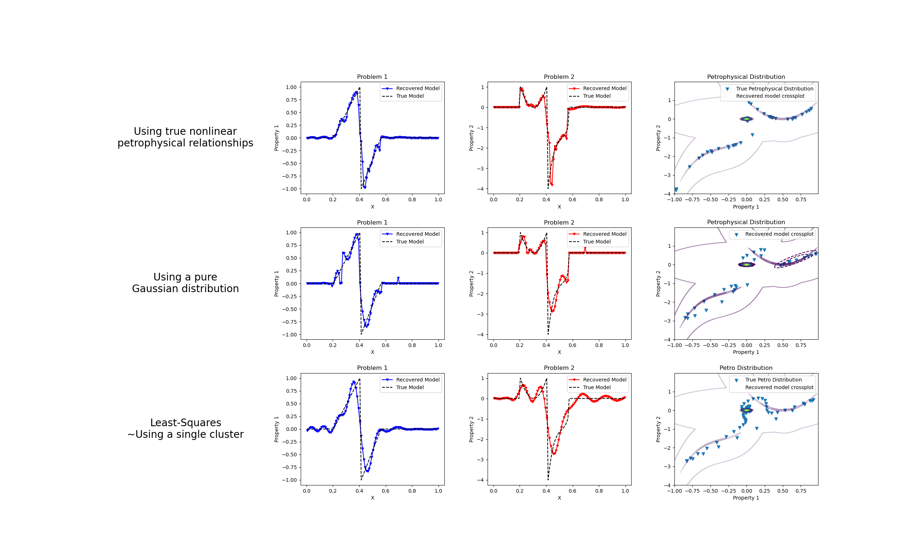

Note
Click here to download the full example code
Petrophysically guided inversion: Joint linear example with nonlinear relationships¶
We do a comparison between the classic Tikhonov inversion and our formulation of a petrophysically guided inversion. We explore it through coupling two linear problems whose respective physical properties are linked by polynomial relationships that change between rock units.
Out:
/home/vsts/work/1/s/SimPEG/simulation.py:540: UserWarning:
G has not been implemented for the simulation
SimPEG.InvProblem will set Regularization.mref to m0.
SimPEG.InvProblem will set Regularization.mref to m0.
SimPEG.InvProblem will set Regularization.mref to m0.
SimPEG.InvProblem is setting bfgsH0 to the inverse of the eval2Deriv.
***Done using same Solver and solver_opts as the LinearSimulation problem***
/usr/share/miniconda/envs/deploy/lib/python3.7/site-packages/pymatsolver/direct.py:26: PardisoTypeConversionWarning:
Converting csc_matrix matrix to CSR format, will slow down.
Alpha scales: [1, 1, 1]
Alpha scales: [1.0]
Alpha scales: [0.0, 3.4563515102825715, 0.0]
Alpha scales: [0.0, 0.034565616827988505, 0.0]
Scale Multipliers: [0.09369146 0.90630854]
Initial data misfit scales: [0.09369146 0.90630854]
model has any nan: 0
=============================== Projected GNCG ===============================
# beta phi_d phi_m f |proj(x-g)-x| LS Comment
-----------------------------------------------------------------------------
x0 has any nan: 0
0 1.89e+01 1.50e+05 0.00e+00 1.50e+05 1.41e+02 0
/usr/share/miniconda/envs/deploy/lib/python3.7/site-packages/pymatsolver/direct.py:73: PardisoTypeConversionWarning:
Converting csc_matrix matrix to CSR format, will slow down.
geophys. misfits: 537.1 (target 15.0 [False]); 34.4 (target 15.0 [False]) | smallness misfit: 1486.0 (target: 100.0 [False])
Beta cooling evaluation: progress: [537.1 34.4] ; minimum progress targets: [120000. 120000.]
1 1.89e+01 8.15e+01 2.13e+01 4.84e+02 8.02e+01 0
geophys. misfits: 254.8 (target 15.0 [False]); 8.1 (target 15.0 [True]) | smallness misfit: 788.3 (target: 100.0 [False])
Beta cooling evaluation: progress: [254.8 8.1] ; minimum progress targets: [429.6 27.5]
Updating scaling for data misfits by 1.8627307843403185
New scales: [0.16147024 0.83852976]
2 1.89e+01 4.79e+01 2.11e+01 4.48e+02 7.30e+01 0 Skip BFGS
geophys. misfits: 118.9 (target 15.0 [False]); 7.8 (target 15.0 [True]) | smallness misfit: 708.2 (target: 100.0 [False])
Beta cooling evaluation: progress: [118.9 7.8] ; minimum progress targets: [203.9 15. ]
Updating scaling for data misfits by 1.9345212304538737
New scales: [0.27141222 0.72858778]
3 1.89e+01 3.79e+01 2.20e+01 4.54e+02 7.12e+01 0
geophys. misfits: 60.3 (target 15.0 [False]); 7.8 (target 15.0 [True]) | smallness misfit: 662.8 (target: 100.0 [False])
Beta cooling evaluation: progress: [60.3 7.8] ; minimum progress targets: [95.1 15. ]
Updating scaling for data misfits by 1.9205298703052833
New scales: [0.41705658 0.58294342]
4 1.89e+01 2.97e+01 2.26e+01 4.57e+02 7.08e+01 0
geophys. misfits: 36.0 (target 15.0 [False]); 8.5 (target 15.0 [True]) | smallness misfit: 630.0 (target: 100.0 [False])
Beta cooling evaluation: progress: [36. 8.5] ; minimum progress targets: [48.3 15. ]
Updating scaling for data misfits by 1.7742325348437373
New scales: [0.5593439 0.4406561]
5 1.89e+01 2.39e+01 2.30e+01 4.59e+02 6.60e+01 0 Skip BFGS
geophys. misfits: 26.3 (target 15.0 [False]); 9.7 (target 15.0 [True]) | smallness misfit: 602.9 (target: 100.0 [False])
Beta cooling evaluation: progress: [26.3 9.7] ; minimum progress targets: [28.8 15. ]
Updating scaling for data misfits by 1.540668638698225
New scales: [0.66166352 0.33833648]
6 1.89e+01 2.07e+01 2.32e+01 4.60e+02 5.57e+01 0 Skip BFGS
geophys. misfits: 22.4 (target 15.0 [False]); 11.6 (target 15.0 [True]) | smallness misfit: 581.4 (target: 100.0 [False])
Beta cooling evaluation: progress: [22.4 11.6] ; minimum progress targets: [21.1 15. ]
Decreasing beta to counter data misfit decrase plateau.
Updating scaling for data misfits by 1.2975823467549734
New scales: [0.71732254 0.28267746]
7 9.46e+00 1.93e+01 2.33e+01 2.40e+02 7.36e+01 0 Skip BFGS
geophys. misfits: 12.3 (target 15.0 [True]); 8.1 (target 15.0 [True]) | smallness misfit: 607.8 (target: 100.0 [False])
Beta cooling evaluation: progress: [12.3 8.1] ; minimum progress targets: [17.9 15. ]
Warming alpha_s to favor clustering: 1.5293756539934775
8 9.46e+00 1.12e+01 2.46e+01 2.44e+02 2.45e+01 0
geophys. misfits: 12.2 (target 15.0 [True]); 10.3 (target 15.0 [True]) | smallness misfit: 534.1 (target: 100.0 [False])
Beta cooling evaluation: progress: [12.2 10.3] ; minimum progress targets: [15. 15.]
Warming alpha_s to favor clustering: 2.0510032531222735
9 9.46e+00 1.17e+01 2.51e+01 2.49e+02 3.66e+01 0
geophys. misfits: 12.0 (target 15.0 [True]); 12.7 (target 15.0 [True]) | smallness misfit: 481.5 (target: 100.0 [False])
Beta cooling evaluation: progress: [12. 12.7] ; minimum progress targets: [15. 15.]
Warming alpha_s to favor clustering: 2.4980028745842993
10 9.46e+00 1.22e+01 2.55e+01 2.54e+02 4.00e+01 0 Skip BFGS
geophys. misfits: 12.1 (target 15.0 [True]); 15.0 (target 15.0 [False]) | smallness misfit: 442.4 (target: 100.0 [False])
Beta cooling evaluation: progress: [12.1 15. ] ; minimum progress targets: [15. 15.]
Decreasing beta to counter data misfit increase.
Updating scaling for data misfits by 1.2423601252921752
New scales: [0.6713299 0.3286701]
11 4.73e+00 1.31e+01 2.54e+01 1.33e+02 6.49e+01 0 Skip BFGS
geophys. misfits: 9.4 (target 15.0 [True]); 8.5 (target 15.0 [True]) | smallness misfit: 500.3 (target: 100.0 [False])
Beta cooling evaluation: progress: [9.4 8.5] ; minimum progress targets: [15. 15.]
Warming alpha_s to favor clustering: 4.195675332544497
12 4.73e+00 9.11e+00 2.79e+01 1.41e+02 6.07e+01 0
geophys. misfits: 9.4 (target 15.0 [True]); 11.9 (target 15.0 [True]) | smallness misfit: 413.5 (target: 100.0 [False])
Beta cooling evaluation: progress: [ 9.4 11.9] ; minimum progress targets: [15. 15.]
Warming alpha_s to favor clustering: 6.004993463639917
13 4.73e+00 1.02e+01 2.91e+01 1.48e+02 4.66e+01 0
geophys. misfits: 9.6 (target 15.0 [True]); 16.2 (target 15.0 [False]) | smallness misfit: 348.4 (target: 100.0 [False])
Beta cooling evaluation: progress: [ 9.6 16.2] ; minimum progress targets: [15. 15.]
Decreasing beta to counter data misfit increase.
Updating scaling for data misfits by 1.5623636247845494
New scales: [0.56660339 0.43339661]
14 2.37e+00 1.24e+01 2.87e+01 8.02e+01 9.09e+01 0
geophys. misfits: 8.6 (target 15.0 [True]); 8.7 (target 15.0 [True]) | smallness misfit: 415.7 (target: 100.0 [False])
Beta cooling evaluation: progress: [8.6 8.7] ; minimum progress targets: [15. 15.]
Warming alpha_s to favor clustering: 10.428589263038809
15 2.37e+00 8.63e+00 3.37e+01 8.83e+01 5.41e+01 0
geophys. misfits: 8.8 (target 15.0 [True]); 12.1 (target 15.0 [True]) | smallness misfit: 316.4 (target: 100.0 [False])
Beta cooling evaluation: progress: [ 8.8 12.1] ; minimum progress targets: [15. 15.]
Warming alpha_s to favor clustering: 15.35249387535806
16 2.37e+00 1.02e+01 3.59e+01 9.52e+01 6.34e+01 0
geophys. misfits: 9.1 (target 15.0 [True]); 13.6 (target 15.0 [True]) | smallness misfit: 269.3 (target: 100.0 [False])
Beta cooling evaluation: progress: [ 9.1 13.6] ; minimum progress targets: [15. 15.]
Warming alpha_s to favor clustering: 21.10385585262597
17 2.37e+00 1.11e+01 3.87e+01 1.03e+02 8.39e+01 0
geophys. misfits: 9.3 (target 15.0 [True]); 15.7 (target 15.0 [False]) | smallness misfit: 226.5 (target: 100.0 [False])
Beta cooling evaluation: progress: [ 9.3 15.7] ; minimum progress targets: [15. 15.]
Decreasing beta to counter data misfit increase.
Updating scaling for data misfits by 1.612905698165457
New scales: [0.44768442 0.55231558]
18 1.18e+00 1.28e+01 3.79e+01 5.76e+01 8.73e+01 0
geophys. misfits: 8.9 (target 15.0 [True]); 8.8 (target 15.0 [True]) | smallness misfit: 246.6 (target: 100.0 [False])
Beta cooling evaluation: progress: [8.9 8.8] ; minimum progress targets: [15. 15.]
Warming alpha_s to favor clustering: 35.638932067286326
19 1.18e+00 8.88e+00 4.74e+01 6.49e+01 8.73e+01 0
geophys. misfits: 8.9 (target 15.0 [True]); 6.9 (target 15.0 [True]) | smallness misfit: 206.4 (target: 100.0 [False])
Beta cooling evaluation: progress: [8.9 6.9] ; minimum progress targets: [15. 15.]
Warming alpha_s to favor clustering: 68.62443505694293
20 1.18e+00 7.81e+00 6.15e+01 8.06e+01 9.93e+01 0
geophys. misfits: 9.6 (target 15.0 [True]); 7.2 (target 15.0 [True]) | smallness misfit: 175.7 (target: 100.0 [False])
Beta cooling evaluation: progress: [9.6 7.2] ; minimum progress targets: [15. 15.]
Warming alpha_s to favor clustering: 125.39550887730347
21 1.18e+00 8.26e+00 8.02e+01 1.03e+02 1.04e+02 0
geophys. misfits: 10.9 (target 15.0 [True]); 11.8 (target 15.0 [True]) | smallness misfit: 148.7 (target: 100.0 [False])
Beta cooling evaluation: progress: [10.9 11.8] ; minimum progress targets: [15. 15.]
Warming alpha_s to favor clustering: 166.42051107828237
22 1.18e+00 1.14e+01 8.80e+01 1.15e+02 1.17e+02 0
geophys. misfits: 9.5 (target 15.0 [True]); 14.0 (target 15.0 [True]) | smallness misfit: 139.6 (target: 100.0 [False])
Beta cooling evaluation: progress: [ 9.5 14. ] ; minimum progress targets: [15. 15.]
Warming alpha_s to favor clustering: 220.1212916457241
23 1.18e+00 1.20e+01 1.01e+02 1.31e+02 1.17e+02 0
geophys. misfits: 11.3 (target 15.0 [True]); 22.5 (target 15.0 [False]) | smallness misfit: 115.7 (target: 100.0 [False])
Beta cooling evaluation: progress: [11.3 22.5] ; minimum progress targets: [15. 15.]
Decreasing beta to counter data misfit increase.
Updating scaling for data misfits by 1.3333277116822226
New scales: [0.37807924 0.62192076]
24 5.91e-01 1.83e+01 9.14e+01 7.23e+01 1.06e+02 0
geophys. misfits: 11.0 (target 15.0 [True]); 11.0 (target 15.0 [True]) | smallness misfit: 122.0 (target: 100.0 [False])
Beta cooling evaluation: progress: [11. 11.] ; minimum progress targets: [15. 18.]
Warming alpha_s to favor clustering: 300.8193019098267
25 5.91e-01 1.10e+01 1.15e+02 7.90e+01 1.21e+02 0
geophys. misfits: 11.8 (target 15.0 [True]); 8.1 (target 15.0 [True]) | smallness misfit: 109.7 (target: 100.0 [False])
Beta cooling evaluation: progress: [11.8 8.1] ; minimum progress targets: [15. 15.]
Warming alpha_s to favor clustering: 469.9254682798914
26 5.91e-01 9.49e+00 1.51e+02 9.89e+01 1.12e+02 0
geophys. misfits: 15.5 (target 15.0 [False]); 11.3 (target 15.0 [True]) | smallness misfit: 103.0 (target: 100.0 [False])
Beta cooling evaluation: progress: [15.5 11.3] ; minimum progress targets: [15. 15.]
Decreasing beta to counter data misfit increase.
Updating scaling for data misfits by 1.3252695796012046
New scales: [0.446186 0.553814]
27 2.96e-01 1.32e+01 1.43e+02 5.55e+01 9.89e+01 0
geophys. misfits: 9.6 (target 15.0 [True]); 9.0 (target 15.0 [True]) | smallness misfit: 103.1 (target: 100.0 [False])
Beta cooling evaluation: progress: [9.6 9. ] ; minimum progress targets: [15. 15.]
Warming alpha_s to favor clustering: 760.3004285164433
28 2.96e-01 9.25e+00 2.09e+02 7.12e+01 1.09e+02 0
geophys. misfits: 10.3 (target 15.0 [True]); 12.1 (target 15.0 [True]) | smallness misfit: 90.4 (target: 100.0 [True])
All targets have been reached
Beta cooling evaluation: progress: [10.3 12.1] ; minimum progress targets: [15. 15.]
Warming alpha_s to favor clustering: 1025.175645909448
------------------------- STOP! -------------------------
1 : |fc-fOld| = 0.0000e+00 <= tolF*(1+|f0|) = 1.5000e+04
0 : |xc-x_last| = 2.2613e-01 <= tolX*(1+|x0|) = 1.0000e-06
0 : |proj(x-g)-x| = 1.0855e+02 <= tolG = 1.0000e-01
0 : |proj(x-g)-x| = 1.0855e+02 <= 1e3*eps = 1.0000e-02
0 : maxIter = 50 <= iter = 29
------------------------- DONE! -------------------------
SimPEG.InvProblem will set Regularization.mref to m0.
SimPEG.InvProblem will set Regularization.mref to m0.
SimPEG.InvProblem will set Regularization.mref to m0.
SimPEG.InvProblem is setting bfgsH0 to the inverse of the eval2Deriv.
***Done using same Solver and solver_opts as the LinearSimulation problem***
Alpha scales: [1, 1, 1]
Alpha scales: [1.0]
Alpha scales: [0.0, 3.486950099816797, 0.0]
Alpha scales: [0.0, 0.03489918112103828, 0.0]
Scale Multipliers: [0.09369146 0.90630854]
Initial data misfit scales: [0.09369146 0.90630854]
model has any nan: 0
=============================== Projected GNCG ===============================
# beta phi_d phi_m f |proj(x-g)-x| LS Comment
-----------------------------------------------------------------------------
x0 has any nan: 0
0 1.87e+01 1.50e+05 0.00e+00 1.50e+05 1.41e+02 0
geophys. misfits: 534.2 (target 15.0 [False]); 33.9 (target 15.0 [False]) | smallness misfit: 105.9 (target: 100.0 [False])
Beta cooling evaluation: progress: [534.2 33.9] ; minimum progress targets: [120000. 120000.]
1 1.87e+01 8.08e+01 1.83e+01 4.24e+02 7.62e+01 0
geophys. misfits: 330.8 (target 15.0 [False]); 5.4 (target 15.0 [True]) | smallness misfit: 77.7 (target: 100.0 [True])
Beta cooling evaluation: progress: [330.8 5.4] ; minimum progress targets: [427.3 27.1]
Updating scaling for data misfits by 2.790176841436301
New scales: [0.22386769 0.77613231]
2 1.87e+01 7.82e+01 1.90e+01 4.34e+02 8.30e+01 0 Skip BFGS
geophys. misfits: 88.2 (target 15.0 [False]); 5.4 (target 15.0 [True]) | smallness misfit: 68.2 (target: 100.0 [True])
Beta cooling evaluation: progress: [88.2 5.4] ; minimum progress targets: [264.6 15. ]
Updating scaling for data misfits by 2.7881395140863816
New scales: [0.44574118 0.55425882]
3 1.87e+01 4.23e+01 2.07e+01 4.31e+02 8.00e+01 0
geophys. misfits: 38.4 (target 15.0 [False]); 5.6 (target 15.0 [True]) | smallness misfit: 70.8 (target: 100.0 [True])
Beta cooling evaluation: progress: [38.4 5.6] ; minimum progress targets: [70.6 15. ]
Updating scaling for data misfits by 2.66748965475904
New scales: [0.68205774 0.31794226]
4 1.87e+01 2.80e+01 2.16e+01 4.32e+02 9.77e+01 0 Skip BFGS
geophys. misfits: 24.0 (target 15.0 [False]); 6.2 (target 15.0 [True]) | smallness misfit: 68.2 (target: 100.0 [True])
Beta cooling evaluation: progress: [24. 6.2] ; minimum progress targets: [30.7 15. ]
Updating scaling for data misfits by 2.424151479542499
New scales: [0.83871881 0.16128119]
5 1.87e+01 2.11e+01 2.19e+01 4.32e+02 7.31e+01 0 Skip BFGS
geophys. misfits: 19.2 (target 15.0 [False]); 6.9 (target 15.0 [True]) | smallness misfit: 66.5 (target: 100.0 [True])
Beta cooling evaluation: progress: [19.2 6.9] ; minimum progress targets: [19.2 15. ]
Updating scaling for data misfits by 2.164287178297629
New scales: [0.918401 0.081599]
6 1.87e+01 1.82e+01 2.21e+01 4.32e+02 4.54e+01 0 Skip BFGS
geophys. misfits: 17.6 (target 15.0 [False]); 8.9 (target 15.0 [True]) | smallness misfit: 64.7 (target: 100.0 [True])
Beta cooling evaluation: progress: [17.6 8.9] ; minimum progress targets: [15.3 15. ]
Decreasing beta to counter data misfit decrase plateau.
Updating scaling for data misfits by 1.6792469738259133
New scales: [0.94974878 0.05025122]
7 9.37e+00 1.71e+01 2.22e+01 2.25e+02 7.20e+01 0 Skip BFGS
geophys. misfits: 11.0 (target 15.0 [True]); 9.0 (target 15.0 [True]) | smallness misfit: 69.3 (target: 100.0 [True])
All targets have been reached
Beta cooling evaluation: progress: [11. 9.] ; minimum progress targets: [15. 15.]
Warming alpha_s to favor clustering: 1.518346406403774
------------------------- STOP! -------------------------
1 : |fc-fOld| = 0.0000e+00 <= tolF*(1+|f0|) = 1.5000e+04
0 : |xc-x_last| = 9.6807e-02 <= tolX*(1+|x0|) = 1.0000e-06
0 : |proj(x-g)-x| = 7.1993e+01 <= tolG = 1.0000e-01
0 : |proj(x-g)-x| = 7.1993e+01 <= 1e3*eps = 1.0000e-02
0 : maxIter = 50 <= iter = 8
------------------------- DONE! -------------------------
SimPEG.InvProblem will set Regularization.mref to m0.
SimPEG.InvProblem will set Regularization.mref to m0.
SimPEG.InvProblem is setting bfgsH0 to the inverse of the eval2Deriv.
***Done using same Solver and solver_opts as the LinearSimulation problem***
/usr/share/miniconda/envs/deploy/lib/python3.7/site-packages/pymatsolver/direct.py:26: PardisoTypeConversionWarning:
Converting csc_matrix matrix to CSR format, will slow down.
Alpha scales: [1, 1]
Alpha scales: [1.0, 0.0032950828701768593, 0.0]
Alpha scales: [1.0, 3.302157914393011e-05, 0.0]
Scale Multipliers: [0.09369146 0.90630854]
/home/vsts/work/1/s/SimPEG/directives/directives.py:621: UserWarning:
There is no PGI regularization. Smallness target is turned off (TriggerSmall flag)
Initial data misfit scales: [0.09369146 0.90630854]
model has any nan: 0
=============================== Projected GNCG ===============================
# beta phi_d phi_m f |proj(x-g)-x| LS Comment
-----------------------------------------------------------------------------
x0 has any nan: 0
0 1.98e+04 1.50e+05 0.00e+00 1.50e+05 1.41e+02 0
/usr/share/miniconda/envs/deploy/lib/python3.7/site-packages/pymatsolver/direct.py:73: PardisoTypeConversionWarning:
Converting csc_matrix matrix to CSR format, will slow down.
geophys. misfits: 549.6 (target 15.0 [False]); 37.0 (target 15.0 [False])
1 3.97e+03 8.50e+01 8.93e-02 4.39e+02 9.50e+01 0
geophys. misfits: 45.0 (target 15.0 [False]); 7.2 (target 15.0 [True])
Updating scaling for data misfits by 2.079262092875832
New scales: [0.17691942 0.82308058]
2 7.94e+02 1.39e+01 9.59e-02 9.00e+01 7.16e+01 0 Skip BFGS
geophys. misfits: 8.7 (target 15.0 [True]); 5.4 (target 15.0 [True])
All targets have been reached
------------------------- STOP! -------------------------
1 : |fc-fOld| = 0.0000e+00 <= tolF*(1+|f0|) = 1.5000e+04
0 : |xc-x_last| = 3.0142e-01 <= tolX*(1+|x0|) = 1.0000e-06
0 : |proj(x-g)-x| = 7.1500e+01 <= tolG = 1.0000e-01
0 : |proj(x-g)-x| = 7.1500e+01 <= 1e3*eps = 1.0000e-02
0 : maxIter = 50 <= iter = 3
------------------------- DONE! -------------------------
/home/vsts/work/1/s/examples/10-pgi/plot_inv_1_PGI_Linear_1D_joint_WithRelationships.py:289: UserWarning:
marker is redundantly defined by the 'marker' keyword argument and the fmt string "b.-" (-> marker='.'). The keyword argument will take precedence.
/home/vsts/work/1/s/examples/10-pgi/plot_inv_1_PGI_Linear_1D_joint_WithRelationships.py:296: UserWarning:
marker is redundantly defined by the 'marker' keyword argument and the fmt string "r.-" (-> marker='.'). The keyword argument will take precedence.
/home/vsts/work/1/s/examples/10-pgi/plot_inv_1_PGI_Linear_1D_joint_WithRelationships.py:341: UserWarning:
marker is redundantly defined by the 'marker' keyword argument and the fmt string "b.-" (-> marker='.'). The keyword argument will take precedence.
/home/vsts/work/1/s/examples/10-pgi/plot_inv_1_PGI_Linear_1D_joint_WithRelationships.py:350: UserWarning:
marker is redundantly defined by the 'marker' keyword argument and the fmt string "r.-" (-> marker='.'). The keyword argument will take precedence.
/home/vsts/work/1/s/examples/10-pgi/plot_inv_1_PGI_Linear_1D_joint_WithRelationships.py:365: UserWarning:
The following kwargs were not used by contour: 'label'
/home/vsts/work/1/s/examples/10-pgi/plot_inv_1_PGI_Linear_1D_joint_WithRelationships.py:374: UserWarning:
The following kwargs were not used by contour: 'label'
/home/vsts/work/1/s/examples/10-pgi/plot_inv_1_PGI_Linear_1D_joint_WithRelationships.py:401: UserWarning:
marker is redundantly defined by the 'marker' keyword argument and the fmt string "b.-" (-> marker='.'). The keyword argument will take precedence.
/home/vsts/work/1/s/examples/10-pgi/plot_inv_1_PGI_Linear_1D_joint_WithRelationships.py:408: UserWarning:
marker is redundantly defined by the 'marker' keyword argument and the fmt string "r.-" (-> marker='.'). The keyword argument will take precedence.
import discretize as Mesh
from SimPEG import (
simulation,
maps,
data_misfit,
directives,
optimization,
regularization,
inverse_problem,
inversion,
utils,
)
import numpy as np
import matplotlib.pyplot as plt
# Random seed for reproductibility
np.random.seed(1)
# Mesh
N = 100
mesh = Mesh.TensorMesh([N])
# Survey design parameters
nk = 30
jk = np.linspace(1.0, 59.0, nk)
p = -0.25
q = 0.25
# Physics
def g(k):
return np.exp(p * jk[k] * mesh.cell_centers_x) * np.cos(
np.pi * q * jk[k] * mesh.cell_centers_x
)
G = np.empty((nk, mesh.nC))
for i in range(nk):
G[i, :] = g(i)
m0 = np.zeros(mesh.nC)
m0[20:41] = np.linspace(0.0, 1.0, 21)
m0[41:57] = np.linspace(-1, 0.0, 16)
poly0 = maps.PolynomialPetroClusterMap(coeffyx=np.r_[0.0, -4.0, 4.0])
poly1 = maps.PolynomialPetroClusterMap(coeffyx=np.r_[-0.0, 3.0, 6.0, 6.0])
poly0_inverse = maps.PolynomialPetroClusterMap(coeffyx=-np.r_[0.0, -4.0, 4.0])
poly1_inverse = maps.PolynomialPetroClusterMap(coeffyx=-np.r_[0.0, 3.0, 6.0, 6.0])
cluster_mapping = [maps.IdentityMap(), poly0_inverse, poly1_inverse]
m1 = np.zeros(100)
m1[20:41] = 1.0 + (poly0 * np.vstack([m0[20:41], m1[20:41]]).T)[:, 1]
m1[41:57] = -1.0 + (poly1 * np.vstack([m0[41:57], m1[41:57]]).T)[:, 1]
model2d = np.vstack([m0, m1]).T
m = utils.mkvc(model2d)
clfmapping = utils.GaussianMixtureWithNonlinearRelationships(
mesh=mesh,
n_components=3,
covariance_type="full",
tol=1e-8,
reg_covar=1e-3,
max_iter=1000,
n_init=100,
init_params="kmeans",
random_state=None,
warm_start=False,
means_init=np.array(
[
[0, 0],
[m0[20:41].mean(), m1[20:41].mean()],
[m0[41:57].mean(), m1[41:57].mean()],
]
),
verbose=0,
verbose_interval=10,
cluster_mapping=cluster_mapping,
)
clfmapping = clfmapping.fit(model2d)
clfnomapping = utils.WeightedGaussianMixture(
mesh=mesh,
n_components=3,
covariance_type="full",
tol=1e-8,
reg_covar=1e-3,
max_iter=1000,
n_init=100,
init_params="kmeans",
random_state=None,
warm_start=False,
verbose=0,
verbose_interval=10,
)
clfnomapping = clfnomapping.fit(model2d)
wires = maps.Wires(("m1", mesh.nC), ("m2", mesh.nC))
relatrive_error = 0.01
noise_floor = 0.0
prob1 = simulation.LinearSimulation(mesh, G=G, model_map=wires.m1)
survey1 = prob1.make_synthetic_data(
m, relative_error=relatrive_error, noise_floor=noise_floor, add_noise=True
)
prob2 = simulation.LinearSimulation(mesh, G=G, model_map=wires.m2)
survey2 = prob2.make_synthetic_data(
m, relative_error=relatrive_error, noise_floor=noise_floor, add_noise=True
)
dmis1 = data_misfit.L2DataMisfit(simulation=prob1, data=survey1)
dmis2 = data_misfit.L2DataMisfit(simulation=prob2, data=survey2)
dmis = dmis1 + dmis2
minit = np.zeros_like(m)
# Distance weighting
wr1 = np.sum(prob1.G ** 2.0, axis=0) ** 0.5 / mesh.cell_volumes
wr1 = wr1 / np.max(wr1)
wr2 = np.sum(prob2.G ** 2.0, axis=0) ** 0.5 / mesh.cell_volumes
wr2 = wr2 / np.max(wr2)
wr = np.r_[wr1, wr2]
W = utils.sdiag(wr)
reg_simple = utils.make_PGIwithRelationships_regularization(
mesh=mesh,
gmmref=clfmapping,
gmm=clfmapping,
approx_gradient=True,
alpha_x=1.0,
wiresmap=wires,
cell_weights_list=[wr1, wr2],
)
opt = optimization.ProjectedGNCG(
maxIter=50, tolX=1e-6, maxIterCG=100, tolCG=1e-3, lower=-10, upper=10,
)
invProb = inverse_problem.BaseInvProblem(dmis, reg_simple, opt)
# directives
scales = directives.ScalingMultipleDataMisfits_ByEig(
chi0_ratio=np.r_[1.0, 1.0], verbose=True, n_pw_iter=10
)
scaling_schedule = directives.JointScalingSchedule(verbose=True)
alpha0_ratio = np.r_[
np.zeros(len(reg_simple.objfcts[0].objfcts)),
100.0 * np.ones(len(reg_simple.objfcts[1].objfcts)),
1.0 * np.ones(len(reg_simple.objfcts[2].objfcts)),
]
alphas = directives.AlphasSmoothEstimate_ByEig(
alpha0_ratio=alpha0_ratio, n_pw_iter=10, verbose=True
)
beta = directives.BetaEstimate_ByEig(beta0_ratio=1e-5, n_pw_iter=10)
betaIt = directives.PGI_BetaAlphaSchedule(
verbose=True, coolingFactor=2.0, progress=0.2,
)
targets = directives.MultiTargetMisfits(verbose=True)
petrodir = directives.PGI_UpdateParameters(update_gmm=False)
# Setup Inversion
inv = inversion.BaseInversion(
invProb,
directiveList=[alphas, scales, beta, petrodir, targets, betaIt, scaling_schedule],
)
mcluster_map = inv.run(minit)
# Inversion with no nonlinear mapping
reg_simple_no_map = utils.make_PGI_regularization(
mesh=mesh,
gmmref=clfnomapping,
gmm=clfnomapping,
approx_gradient=True,
alpha_x=1.0,
wiresmap=wires,
cell_weights_list=[wr1, wr2],
)
opt = optimization.ProjectedGNCG(
maxIter=50, tolX=1e-6, maxIterCG=100, tolCG=1e-3, lower=-10, upper=10,
)
invProb = inverse_problem.BaseInvProblem(dmis, reg_simple_no_map, opt)
# directives
scales = directives.ScalingMultipleDataMisfits_ByEig(
chi0_ratio=np.r_[1.0, 1.0], verbose=True, n_pw_iter=10
)
scaling_schedule = directives.JointScalingSchedule(verbose=True)
alpha0_ratio = np.r_[
np.zeros(len(reg_simple_no_map.objfcts[0].objfcts)),
100.0 * np.ones(len(reg_simple_no_map.objfcts[1].objfcts)),
1.0 * np.ones(len(reg_simple_no_map.objfcts[2].objfcts)),
]
alphas = directives.AlphasSmoothEstimate_ByEig(
alpha0_ratio=alpha0_ratio, n_pw_iter=10, verbose=True
)
beta = directives.BetaEstimate_ByEig(beta0_ratio=1e-5, n_pw_iter=10)
betaIt = directives.PGI_BetaAlphaSchedule(
verbose=True, coolingFactor=2.0, progress=0.2,
)
targets = directives.MultiTargetMisfits(
chiSmall=1.0, TriggerSmall=True, TriggerTheta=False, verbose=True
)
petrodir = directives.PGI_UpdateParameters(update_gmm=False)
# Setup Inversion
inv = inversion.BaseInversion(
invProb,
directiveList=[alphas, scales, beta, petrodir, targets, betaIt, scaling_schedule],
)
mcluster_no_map = inv.run(minit)
# Tikhonov Inversion
reg1 = regularization.Tikhonov(mesh, alpha_s=1.0, alpha_x=1.0, mapping=wires.m1)
reg1.cell_weights = wr1
reg2 = regularization.Tikhonov(mesh, alpha_s=1.0, alpha_x=1.0, mapping=wires.m2)
reg2.cell_weights = wr2
reg = reg1 + reg2
opt = optimization.ProjectedGNCG(
maxIter=50, tolX=1e-6, maxIterCG=100, tolCG=1e-3, lower=-10, upper=10,
)
invProb = inverse_problem.BaseInvProblem(dmis, reg, opt)
# directives
alpha0_ratio = np.r_[
100.0 * np.ones(len(reg.objfcts[0].objfcts)),
1.0 * np.ones(len(reg.objfcts[1].objfcts)),
]
alphas = directives.AlphasSmoothEstimate_ByEig(
alpha0_ratio=alpha0_ratio, n_pw_iter=10, verbose=True
)
scales = directives.ScalingMultipleDataMisfits_ByEig(
chi0_ratio=np.r_[1.0, 1.0], verbose=True, n_pw_iter=10
)
scaling_schedule = directives.JointScalingSchedule(verbose=True)
beta = directives.BetaEstimate_ByEig(beta0_ratio=1e-5, n_pw_iter=10)
beta_schedule = directives.BetaSchedule(coolingFactor=5.0, coolingRate=1)
targets = directives.MultiTargetMisfits(TriggerSmall=False, verbose=True,)
# Setup Inversion
inv = inversion.BaseInversion(
invProb,
directiveList=[alphas, scales, beta, targets, beta_schedule, scaling_schedule],
)
mtik = inv.run(minit)
# Final Plot
fig, axes = plt.subplots(3, 4, figsize=(25, 15))
axes = axes.reshape(12)
left, width = 0.25, 0.5
bottom, height = 0.25, 0.5
right = left + width
top = bottom + height
axes[0].set_axis_off()
axes[0].text(
0.5 * (left + right),
0.5 * (bottom + top),
("Using true nonlinear\npetrophysical relationships"),
horizontalalignment="center",
verticalalignment="center",
fontsize=20,
color="black",
transform=axes[0].transAxes,
)
axes[1].plot(mesh.cell_centers_x, wires.m1 * mcluster_map, "b.-", ms=5, marker="v")
axes[1].plot(mesh.cell_centers_x, wires.m1 * m, "k--")
axes[1].set_title("Problem 1")
axes[1].legend(["Recovered Model", "True Model"], loc=1)
axes[1].set_xlabel("X")
axes[1].set_ylabel("Property 1")
axes[2].plot(mesh.cell_centers_x, wires.m2 * mcluster_map, "r.-", ms=5, marker="v")
axes[2].plot(mesh.cell_centers_x, wires.m2 * m, "k--")
axes[2].set_title("Problem 2")
axes[2].legend(["Recovered Model", "True Model"], loc=1)
axes[2].set_xlabel("X")
axes[2].set_ylabel("Property 2")
x, y = np.mgrid[-1:1:0.01, -4:2:0.01]
pos = np.empty(x.shape + (2,))
pos[:, :, 0] = x
pos[:, :, 1] = y
CS = axes[3].contour(
x,
y,
np.exp(clfmapping.score_samples(pos.reshape(-1, 2)).reshape(x.shape)),
100,
alpha=0.25,
cmap="viridis",
)
axes[3].scatter(wires.m1 * mcluster_map, wires.m2 * mcluster_map, marker="v")
axes[3].set_title("Petrophysical Distribution")
CS.collections[0].set_label("")
axes[3].legend(["True Petrophysical Distribution", "Recovered model crossplot"])
axes[3].set_xlabel("Property 1")
axes[3].set_ylabel("Property 2")
# fig.suptitle(
# 'Doodling with Mapping: one mapping per identified rock unit\n' +
# 'Joint inversion of 1D Linear Problems ' +
# 'with nonlinear petrophysical relationships',
# fontsize=24
# )
axes[4].set_axis_off()
axes[4].text(
0.5 * (left + right),
0.5 * (bottom + top),
("Using a pure\nGaussian distribution"),
horizontalalignment="center",
verticalalignment="center",
fontsize=20,
color="black",
transform=axes[4].transAxes,
)
axes[5].plot(mesh.cell_centers_x, wires.m1 * mcluster_no_map, "b.-", ms=5, marker="v")
# axes[5].plot(mesh.cell_centers_x, wires.m1 * reg_simple_no_map.objfcts[0].mref, 'g--')
axes[5].plot(mesh.cell_centers_x, wires.m1 * m, "k--")
axes[5].set_title("Problem 1")
axes[5].legend(["Recovered Model", "True Model"], loc=1)
axes[5].set_xlabel("X")
axes[5].set_ylabel("Property 1")
axes[6].plot(mesh.cell_centers_x, wires.m2 * mcluster_no_map, "r.-", ms=5, marker="v")
# axes[6].plot(mesh.cell_centers_x, wires.m2 * reg_simple_no_map.objfcts[0].mref, 'g--')
axes[6].plot(mesh.cell_centers_x, wires.m2 * m, "k--")
axes[6].set_title("Problem 2")
axes[6].legend(["Recovered Model", "True Model"], loc=1)
axes[6].set_xlabel("X")
axes[6].set_ylabel("Property 2")
CSF = axes[7].contour(
x,
y,
np.exp(clfmapping.score_samples(pos.reshape(-1, 2)).reshape(x.shape)),
100,
alpha=0.5,
label="True Petro. Distribution",
)
CS = axes[7].contour(
x,
y,
np.exp(clfnomapping.score_samples(pos.reshape(-1, 2)).reshape(x.shape)),
500,
cmap="viridis",
linestyles="--",
label="Modeled Petro. Distribution",
)
axes[7].scatter(
wires.m1 * mcluster_no_map,
wires.m2 * mcluster_no_map,
marker="v",
label="Recovered model crossplot",
)
axes[7].set_title("Petrophysical Distribution")
axes[7].legend()
axes[7].set_xlabel("Property 1")
axes[7].set_ylabel("Property 2")
# Tikonov
axes[8].set_axis_off()
axes[8].text(
0.5 * (left + right),
0.5 * (bottom + top),
("Tikhonov\n~Using a single cluster"),
horizontalalignment="center",
verticalalignment="center",
fontsize=20,
color="black",
transform=axes[8].transAxes,
)
axes[9].plot(mesh.cell_centers_x, wires.m1 * mtik, "b.-", ms=5, marker="v")
axes[9].plot(mesh.cell_centers_x, wires.m1 * m, "k--")
axes[9].set_title("Problem 1")
axes[9].legend(["Recovered Model", "True Model"], loc=1)
axes[9].set_xlabel("X")
axes[9].set_ylabel("Property 1")
axes[10].plot(mesh.cell_centers_x, wires.m2 * mtik, "r.-", ms=5, marker="v")
axes[10].plot(mesh.cell_centers_x, wires.m2 * m, "k--")
axes[10].set_title("Problem 2")
axes[10].legend(["Recovered Model", "True Model"], loc=1)
axes[10].set_xlabel("X")
axes[10].set_ylabel("Property 2")
CS = axes[11].contour(
x,
y,
np.exp(clfmapping.score_samples(pos.reshape(-1, 2)).reshape(x.shape)),
100,
alpha=0.25,
cmap="viridis",
)
axes[11].scatter(wires.m1 * mtik, wires.m2 * mtik, marker="v")
axes[11].set_title("Petro Distribution")
CS.collections[0].set_label("")
axes[11].legend(["True Petro Distribution", "Recovered model crossplot"])
axes[11].set_xlabel("Property 1")
axes[11].set_ylabel("Property 2")
plt.subplots_adjust(wspace=0.3, hspace=0.3, top=0.85)
plt.show()
Total running time of the script: ( 1 minutes 3.004 seconds)
Estimated memory usage: 9 MB